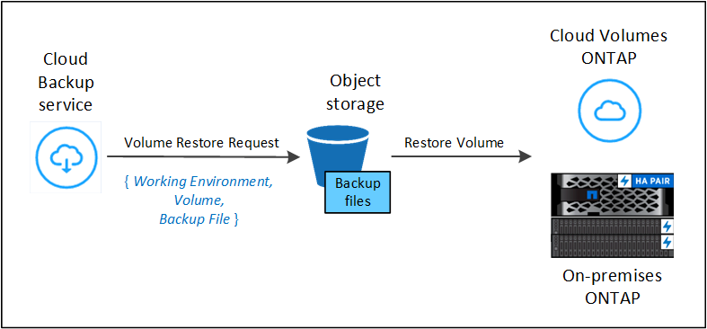
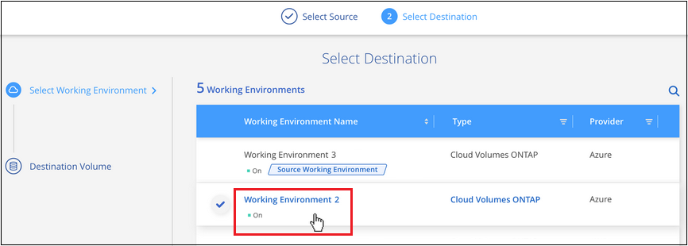
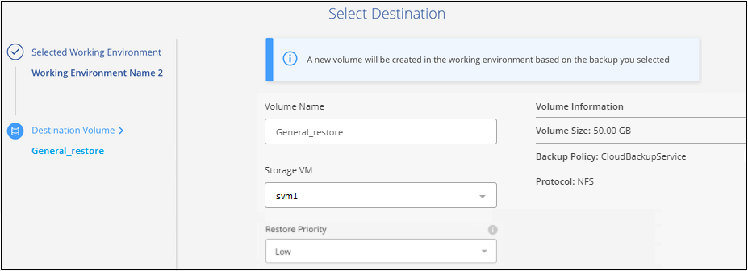

Amazon Web Services
Amazon Web Services
 Google Cloud
Google Cloud
 Microsoft Azure
Microsoft Azure
 要求變更文件
要求變更文件 編輯此頁面
編輯此頁面 瞭解如何作出貢獻
瞭解如何作出貢獻從ONTAP 備份檔案還原支援資料
備份會儲存在雲端帳戶的物件存放區中、以便從特定時間點還原資料。您可以從ONTAP 備份檔案還原整個支援磁碟區、或者如果您只需要還原幾個檔案、就可以從備份檔案還原個別檔案。
您可以將* Volume *（新磁碟區）還原至原始工作環境、使用相同雲端帳戶的不同工作環境、或內部部署ONTAP 的內部系統。
您可以將*檔案*還原至原始工作環境中的磁碟區、使用相同雲端帳戶的不同工作環境中的磁碟區、或還原至內部部署ONTAP 的S還原 系統上的磁碟區。
需要有效的Cloud Backup授權、才能將資料從備份檔案還原至正式作業系統。
還原儀表板
您可以使用還原儀表板來執行磁碟區和檔案還原作業。若要存取還原儀表板、請按一下Cloud Manager左側導覽功能表中的*備份與還原*、然後按一下*還原*索引標籤。您也可以按一下  >*從「服務」面板中的「備份與還原」服務中檢視「還原儀表板」*。
>*從「服務」面板中的「備份與還原」服務中檢視「還原儀表板」*。

|
雲端備份必須已啟用、至少必須有一個工作環境、而且必須存在初始備份檔案。 |

如您所見、「還原儀表板」提供兩種不同的方法來還原備份檔案中的資料：瀏覽與還原*和*搜尋與還原。
比較瀏覽與還原、以及搜尋與還原
廣義而言、當您需要從上週或上個月還原特定的磁碟區或檔案、而且您知道檔案的名稱和位置、以及檔案的最後狀態良好的日期時、_Browse & Restore通常會更好。當您需要還原磁碟區或檔案時、「搜尋與還原」通常會比較好、但您不記得確切的名稱、磁碟區所在的磁碟區、或是上次保存狀態良好的日期。
此表提供兩種方法的比較。
| 瀏覽與還原 | 搜尋與還原 |
|---|---|
瀏覽資料夾樣式的結構、在單一備份檔案中尋找磁碟區或檔案 |
依部分或完整磁碟區名稱、部分或完整檔案名稱、大小範圍及其他搜尋篩選器、在*所有備份檔案*之間搜尋磁碟區或檔案 |
Volume與檔案還原可搭配儲存在Amazon S3、Azure Blob、Google Cloud和NetApp StorageGRID 的備份檔案使用。 |
Volume與檔案還原可與儲存在Amazon S3和Google Cloud中的備份檔案搭配使用 |
從StorageGRID 無法存取網際網路的站台還原磁碟區和檔案 |
在黑暗站台不受支援 |
不會處理已重新命名或刪除的檔案 |
處理新建立/刪除/重新命名的目錄、以及新建立/刪除/重新命名的檔案 |
瀏覽橫跨公有雲和私有雲的結果 |
瀏覽跨公有雲和本機Snapshot複本的結果 |
無需額外的雲端供應商資源 |
每個帳戶所需的額外資源庫和公有雲供應商資源 |
無需額外的雲端供應商成本 |
掃描備份和磁碟區以取得搜尋結果時、與公有雲供應商資源相關的成本 |
在使用任一還原方法之前、請先確定您的環境已針對獨特的資源需求進行設定。這些要求將在下節中說明。
請參閱您要使用的還原作業類型的需求與還原步驟：
使用瀏覽與還原還原ONTAP 還原資料
在開始還原磁碟區或檔案之前、您應該知道要還原的磁碟區或檔案名稱、磁碟區所在工作環境的名稱、以及要還原的備份檔案大約日期。
*附註：*如果您要還原的磁碟區備份檔案位於歸檔儲存設備（從ONTAP 版本號9.10.1開始）中、還原作業將需要較長的時間、而且會產生成本。此外、目的地叢集也必須執行ONTAP 不含更新版本的版本資訊的版本。
瀏覽及還原支援的工作環境和物件儲存供應商
您可以將磁碟區或個別檔案、從ONTAP 一個還原檔還原至下列工作環境：
| 備份檔案位置 | 目的地工作環境 | |
|---|---|---|
* 磁碟區還原 * |
檔案還原 ifdef：：AWS [] |
|
Amazon S3 |
AWS 內部部署的內部系統 Cloud Volumes ONTAP ONTAP |
AWS內部部署的不全系統endif::AWS [] ifdef:azure[] Cloud Volumes ONTAP ONTAP |
Azure Blob |
Azure 內部部署的整套系統 Cloud Volumes ONTAP ONTAP |
Azure內部部署的系統中的資料：：azure[] ifdef：：Cloud Volumes ONTAP ONTAP GCP[] |
Google Cloud Storage |
在Google內部部署的內部部署系統中使用Cloud Volumes ONTAP ONTAP |
在Google中顯示（1）內部部署的不二系統（1）Cloud Volumes ONTAP ONTAP endif::GCP[] |
NetApp StorageGRID |
內部部署 ONTAP 的作業系統 |
內部部署 ONTAP 的作業系統 |
（1）Connector必須部署在Google Cloud Platform VPC上、才能獲得此支援。
請注意、「內部部署ONTAP 的功能系統」的參考資料包括FAS 了功能性的功能、包括了功能性的功能、包括了功能性的功能、AFF 功能性的功能、以及ONTAP Select 功能
|
|
如果備份檔案位於歸檔儲存設備中、則僅支援Volume還原。使用瀏覽與還原時、目前不支援歸檔儲存設備的檔案還原。 |
使用瀏覽與還原還原磁碟區
當您從備份檔案還原磁碟區時、Cloud Backup會使用備份中的資料來建立_new磁碟區。您可以將資料還原至原始工作環境中的磁碟區、或還原至與來源工作環境位於相同雲端帳戶中的不同工作環境。您也可以將磁碟區還原至內部部署ONTAP 的作業系統。

如您所見、您必須知道工作環境名稱、磁碟區名稱及備份檔案日期、才能執行磁碟區還原。
下列影片顯示還原磁碟區的快速步驟：
-
選擇*備份與還原*服務。
-
按一下「還原」索引標籤、即會顯示「還原儀表板」。
-
在_瀏覽與還原_區段中、按一下*還原磁碟區*。

-
在_選取來源_頁面中、瀏覽至您要還原之磁碟區的備份檔案。選取*工作環境*、*磁碟區*和*備份*檔案、其中含有您要還原的日期/時間戳記。

-
按一下 * 繼續 * 。
-
在「選取目的地」頁面中、選取您要還原磁碟區的*工作環境*。

-
如果您選擇內部部署ONTAP 的一套系統、但尚未設定叢集連線至物件儲存設備、系統會提示您提供其他資訊：
-
從Amazon S3還原時、請在ONTAP 目標Volume所在的叢集中選取IPspace、輸入您所建立之使用者的存取金鑰和秘密金鑰、以便ONTAP 讓該叢集能夠存取S3儲存區、 此外、您也可以選擇私有VPC端點來進行安全的資料傳輸。
-
從Azure Blob還原時、請在ONTAP 目的地Volume所在的叢集中選取IPspace、選取Azure訂閱以存取物件儲存設備、並選取vnet和Subnet（子網路）以選擇用於安全資料傳輸的私有端點。
-
從Google Cloud Storage還原時、請選取Google Cloud Project和存取金鑰和秘密金鑰、以存取物件儲存設備、儲存備份的區域、ONTAP 以及目的地Volume所在的物件叢集中的IPspace。
-
從StorageGRID 物件還原時、請輸入StorageGRID 用來ONTAP 與StorageGRID 物件進行HTTPS通訊的支援伺服器FQDN和連接埠、選擇存取物件儲存所需的存取金鑰和秘密金鑰、以及ONTAP 位於目的地Volume所在之資料中心內的IPspace。
-
輸入您要用於還原磁碟區的名稱、然後選取磁碟區所在的Storage VM。根據預設、*<SOUR_volume名稱>_restore *會用作磁碟區名稱。

您只能在將Volume還原至內部部署ONTAP 的還原系統時、選取要用於其容量的集合體。
-
如果您要從位於歸檔儲存層的備份檔案還原磁碟區（從ONTAP 版本號9.10.1開始提供）、則可以選取還原優先順序。
-
-
-
按一下「還原」、您就會回到「還原儀表板」、以便檢閱還原作業的進度。
Cloud Backup會根據您選取的備份建立新的磁碟區。您可以 "管理此新Volume的備份設定" 視需要而定。
請注意、根據歸檔層和還原優先順序、從歸檔儲存設備中的備份檔案還原磁碟區可能需要許多分鐘或數小時的時間。您可以按一下「工作監視器」索引標籤來查看還原進度。
使用瀏覽與還原還原ONTAP 還原功能還原各種檔案
如果您只需要從ONTAP 一個還原磁碟區備份中還原幾個檔案、您可以選擇還原個別檔案、而非還原整個磁碟區。您可以將檔案還原至原始工作環境中的現有磁碟區、或還原至使用相同雲端帳戶的不同工作環境。您也可以將檔案還原至內部部署 ONTAP 的作業系統上的 Volume 。
如果您選取多個檔案、所有檔案都會還原至您選擇的相同目的地Volume。因此、如果您想要將檔案還原至不同的磁碟區、就必須執行多次還原程序。

|
如果備份檔案位於歸檔儲存設備中、則無法還原個別檔案。在這種情況下、您可以從尚未歸檔的較新備份檔案還原檔案、或是從歸檔的備份還原整個磁碟區、然後存取所需的檔案、或是使用「搜尋與還原」還原檔案。 |
先決條件
-
在您的不景點或內部部署的地方、執行檔案還原作業時、該版本必須為9.6或更高版本。ONTAP Cloud Volumes ONTAP ONTAP
-
AWS跨帳戶還原需要在AWS主控台中手動執行動作。請參閱 AWS 主題 "授予跨帳戶庫位權限" 以取得詳細資料。
檔案還原程序
流程如下：
-
若要從磁碟區備份還原一或多個檔案、請按一下「還原」索引標籤、按一下「瀏覽與還原」下的「還原檔案」、然後選取檔案（或檔案）所在的備份檔案。
-
Cloud Backup會顯示所選備份檔案中的資料夾和檔案。
-
選擇您要從該備份還原的檔案。
-
選取您要還原檔案的位置（工作環境、磁碟區和資料夾）、然後按一下*還原*。
-
檔案即會還原。

如您所見、您必須知道工作環境名稱、磁碟區名稱、備份檔案日期及檔案名稱、才能執行檔案還原。
使用「瀏覽與還原」還原檔案
請依照下列步驟、從ONTAP 一份不支援的磁碟區備份、將檔案還原至磁碟區。您應該知道要用來還原檔案的磁碟區名稱、以及備份檔案的日期。此功能使用「即時瀏覽」功能、可讓您檢視每個備份檔案中的目錄和檔案清單。
下列影片顯示快速逐步解說還原單一檔案：
-
選擇*備份與還原*服務。
-
按一下「還原」索引標籤、即會顯示「還原儀表板」。
-
在_瀏覽與還原_區段中、按一下*還原檔案*。

-
在_選取來源_頁面中、瀏覽至包含您要還原之檔案的磁碟區的備份檔案。選取*工作環境*、磁碟區*和*備份、其中含有您要還原檔案的日期/時間戳記。

-
按一下*繼續*、即會顯示Volume備份中的資料夾和檔案清單。
-
在「選取檔案 _ 」頁面中、選取您要還原的檔案、然後按一下「 * 繼續 * 」。若要協助您尋找檔案：
-
如果看到檔案名稱、您可以按一下該檔案名稱。
-
您可以按一下搜尋圖示、然後輸入檔案名稱、直接瀏覽至檔案。
-
您可以使用向下瀏覽資料夾的層級
 此列結尾的按鈕可尋找檔案。
此列結尾的按鈕可尋找檔案。當您選取檔案時、檔案會新增至頁面左側、以便您查看已選擇的檔案。如果需要、您可以按一下檔案名稱旁的 * x* 、從清單中移除檔案。
-
-
在「選取目的地」頁面中、選取您要還原檔案的*工作環境*。

如果您選取內部部署叢集、但尚未設定與物件儲存設備的叢集連線、系統會提示您提供其他資訊：
-
從Amazon S3還原時、請在ONTAP 目的地Volume所在的叢集中輸入IPspace、以及存取物件儲存所需的AWS存取金鑰和秘密金鑰。
-
從Azure Blob還原時、請在ONTAP 目的地Volume所在的叢集中輸入IPspace。
-
從Google Cloud Storage還原時、請在ONTAP 目標磁碟區所在的叢集中輸入IPspace、以及存取物件儲存所需的存取金鑰和秘密金鑰。
-
從StorageGRID 物件還原時、請輸入StorageGRID 支援ONTAP 以HTTPS通訊的支援對象伺服器的FQDN和連接埠StorageGRID 、輸入存取物件儲存所需的存取金鑰和秘密金鑰、以及ONTAP 目的地Volume所在的物件叢集中的IPspace。
-
然後選擇 * Volume * 和 * 資料夾 * 、您可以在其中還原檔案。

-
-
還原檔案時、您有幾個位置選項可以選擇。
-
當您選擇 * 選取目標資料夾 * 時、如上所示：
-
您可以選取任何資料夾。
-
您可以將游標暫留在資料夾上、然後按一下
在列末端向下切入子資料夾、然後選取資料夾。
-
-
如果您選取的目的地工作環境和磁碟區與來源檔案所在的位置相同、您可以選取*維護來源資料夾路徑*、將檔案或所有檔案還原至來源結構中的相同資料夾。所有相同的資料夾和子資料夾都必須已經存在、而且不會建立資料夾。
-
按一下「還原」、您就會回到「還原儀表板」、以便檢閱還原作業的進度。您也可以按一下「工作監視器」標籤來查看還原進度。
-
-
使用「搜尋與還原」還原ONTAP 資料
您可以ONTAP 使用「搜尋與還原」、從還原檔還原磁碟區或個別檔案。「搜尋與還原」可讓您從儲存在雲端儲存設備上的所有備份中搜尋特定的磁碟區或檔案、以供特定供應商使用、然後執行還原。您不需要知道確切的工作環境名稱或磁碟區名稱、搜尋會查看所有的Volume備份檔案。
搜尋作業也會查看ONTAP 所有適用於您的Shapes的本機Snapshot複本。由於從本機Snapshot複本還原資料的速度比從備份檔案還原更快、成本更低、因此您可能想要從Snapshot還原資料。您可以從畫版上的Volume Details（磁碟區詳細資料）頁面、將Snapshot還原為新的磁碟區。
當您從備份檔案還原磁碟區時、Cloud Backup會使用備份中的資料來建立_new磁碟區。您可以將資料還原為原始工作環境中的磁碟區、或還原至與來源工作環境位於相同雲端帳戶中的不同工作環境。您也可以將磁碟區還原至內部部署ONTAP 的作業系統。
您可以將檔案還原至原始磁碟區位置、相同工作環境中的不同磁碟區、或是使用相同雲端帳戶的不同工作環境。您也可以將檔案還原至內部部署 ONTAP 的作業系統上的 Volume 。
如果您要還原的磁碟區備份檔案位於歸檔儲存設備（ONTAP 從版本號9.10.1開始提供）、還原作業將需要較長的時間、並會產生額外成本。請注意、目的地叢集也必須執行ONTAP 版本不支援的版本為《支援使用支援的功能》（更新版本）、而且目前不支援從歸檔儲存設備還原檔案。
在開始之前、您應該先瞭解要還原的磁碟區或檔案名稱或位置。
下列影片顯示快速逐步解說還原單一檔案：
搜尋與還原支援的工作環境與物件儲存供應商
您可以將磁碟區或個別檔案、從ONTAP 一個還原檔還原至下列工作環境：
| 備份檔案位置 | 目的地工作環境 | |
|---|---|---|
* 磁碟區還原 * |
檔案還原 ifdef：：AWS [] |
|
Amazon S3 |
AWS 內部部署的內部系統 Cloud Volumes ONTAP ONTAP |
AWS內部部署的不全系統endif::AWS [] ifdef:azure[] Cloud Volumes ONTAP ONTAP |
Azure Blob |
目前不支援 |
endif::azure[] ifdef::azure[] endif::azure[] ifdef::GCP[] |
Google Cloud Storage |
在Google內部部署的內部部署系統中使用Cloud Volumes ONTAP ONTAP |
在Google內部部署中的系統資訊：Cloud Volumes ONTAP ONTAP GCP[] |
NetApp StorageGRID |
目前不支援 |
|
|
|
您必須在雲端供應商平台上部署Connector、才能獲得此支援。當連接器安裝在內部部署環境中時、不支援搜尋與還原。 |
請注意、「內部部署ONTAP 的功能系統」的參考資料包括FAS 了功能性的功能、包括了功能性的功能、包括了功能性的功能、AFF 功能性的功能、以及ONTAP Select 功能
先決條件
-
叢集需求：
-
此版本必須為9.8或更新版本。ONTAP
-
磁碟區所在的儲存VM（SVM）必須具有已設定的資料LIF。
-
必須在磁碟區上啟用NFS。
-
SnapDiff RPC伺服器必須在SVM上啟動。在工作環境中啟用索引時、Cloud Manager會自動執行此作業。
-
-
AWS要求：
-
必須將特定的Amazon Athena、AWS黏著及AWS S3權限新增至提供Cloud Manager權限的使用者角色。 "請確定所有權限均已正確設定"。
請注意、如果您已經使用Cloud Backup搭配過去設定的Connector、現在就必須將Athena新增並黏著權限給Cloud Manager使用者角色。這些都是新功能、搜尋與還原是必備功能。
-
-
Google Cloud需求：
-
必須將特定的Google BigQuery權限新增至提供Cloud Manager權限的使用者角色。 "請確定所有權限均已正確設定"。
請注意、如果您已經使用Cloud Backup搭配過去設定的Connector、現在就必須將BigQuery權限新增至Cloud Manager使用者角色。這些都是新功能、搜尋與還原是必備功能。
-
搜尋與還原程序
流程如下：
-
在使用搜尋與還原之前、您必須在每個要從中還原磁碟區或檔案的來源工作環境上啟用「索引」。這可讓索引目錄追蹤每個磁碟區的備份檔案。
-
若要從磁碟區備份還原磁碟區或檔案、請按一下「搜尋與還原」下的「搜尋與還原」。
-
依部分或完整磁碟區名稱、部分或完整檔案名稱、大小範圍、建立日期範圍、其他搜尋篩選條件輸入磁碟區或檔案的搜尋條件、然後按一下*搜尋*。
「搜尋結果」頁面會顯示檔案或磁碟區符合搜尋條件的所有位置。
-
按一下「檢視所有備份」以取得您要用來還原磁碟區或檔案的位置、然後在您要使用的實際備份檔案上按一下「還原」。
-
選取要還原磁碟區或檔案的位置、然後按一下*還原*。
-
磁碟區或檔案會還原。
如您所見、您真的只需要知道部分磁碟區或檔案名稱、而Cloud Backup會搜尋所有符合搜尋條件的備份檔案。
為每個工作環境啟用索引型錄
在使用搜尋與還原之前、您必須在每個要從中還原磁碟區或檔案的來源工作環境中啟用「索引」。這可讓索引目錄追蹤每個磁碟區和每個備份檔案、讓您的搜尋變得非常快速且有效率。
啟用此功能時、Cloud Backup會在SVM上為您的磁碟區啟用SnapDiff v3、並會執行下列動作：
-
對於儲存在AWS中的備份、它會配置新的S3儲存區和 "Amazon Athena互動查詢服務" 和 "AWS黏著伺服器無資料整合服務"。
-
對於儲存在Google Cloud中的備份、IT會配置新的儲存庫、以及 "Google Cloud BigQuery服務" 在帳戶/專案層級上進行資源配置。
如果您的工作環境已啟用索引、請前往下一節還原資料。
若要啟用工作環境的索引：
-
如果沒有索引工作環境、請在「還原儀表板」的「搜尋與還原」下、按一下「啟用工作環境的索引」、然後針對工作環境按一下「*啟用索引」。
-
如果至少有一個工作環境已建立索引、請在「還原儀表板」的「搜尋與還原」下、按一下「索引設定」、然後針對工作環境按一下「啟用索引」。
在所有服務均已配置且索引目錄已啟動之後、工作環境會顯示為「作用中」。

視工作環境中的磁碟區大小和雲端中的備份檔案數量而定、初始索引程序可能需要一小時的時間。之後、每小時都會以遞增變更的方式進行透明更新、以維持最新狀態。
使用「搜尋與還原」還原磁碟區和檔案
您就可以了 為您的工作環境啟用索引、您可以使用搜尋與還原來還原磁碟區或檔案。這可讓您使用各種篩選器、找出想要從所有備份檔案還原的確切檔案或磁碟區。
-
選擇*備份與還原*服務。
-
按一下「還原」索引標籤、即會顯示「還原儀表板」。
-
在「搜尋與還原」區段中、按一下「搜尋與還原」。

-
從「搜尋與還原」頁面：
-
在搜尋列中、輸入完整或部分的Volume名稱或檔案名稱。
-
在篩選區域中、選取篩選條件。例如、您可以選取資料所在的工作環境和檔案類型、例如.doc.
-
-
按一下「搜尋」、「搜尋結果」區域會顯示檔案或磁碟區符合您搜尋條件的所有位置。

-
按一下「檢視所有備份」以取得您要還原資料的位置、以顯示包含該磁碟區或檔案的所有備份檔案。

-
按一下「還原」以取得您要用來從雲端還原磁碟區或檔案的備份檔案。
請注意、結果也會識別搜尋中包含檔案的本機Volume Snapshot複本。目前Snapshot的*還原*按鈕無法運作、但如果您想要從Snapshot複本還原資料、而非從備份檔案還原資料、請記下磁碟區的名稱和位置、然後在CanvasTM上開啟Volume Details（磁碟區詳細資料）頁面、 並使用*從Snapshot Copy*還原選項。
-
選取要還原磁碟區或檔案的位置、然後按一下*還原*。
-
對於檔案、您可以還原至原始位置、也可以選擇替代位置
-
對於Volume、您可以選取位置。
-
磁碟區或檔案會還原、並返回還原儀表板、以便您檢閱還原作業的進度。您也可以按一下「工作監視器」標籤來查看還原進度。
對於還原的磁碟區、您可以 "管理此新Volume的備份設定" 視需要而定。